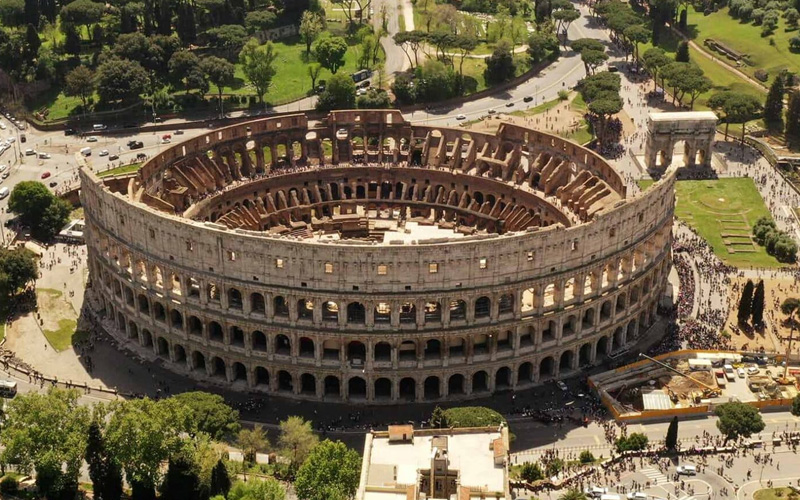
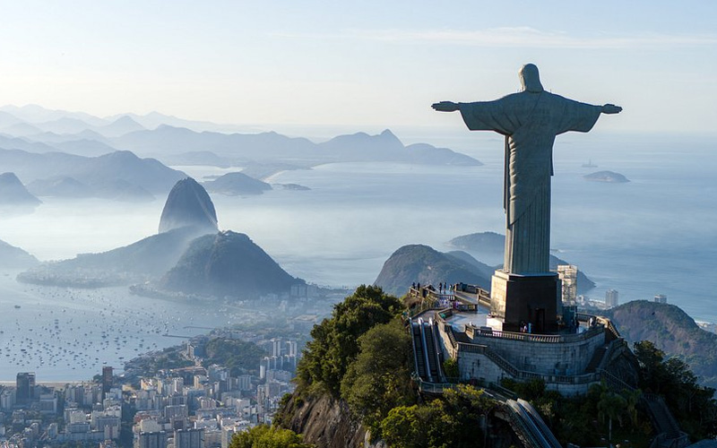
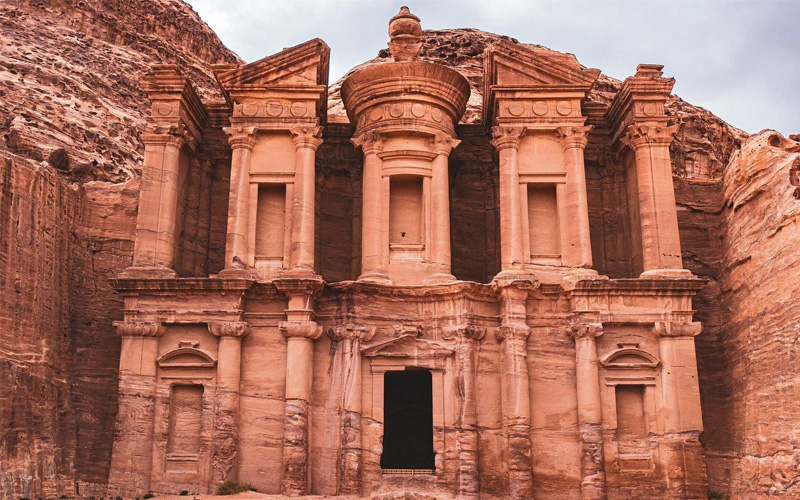
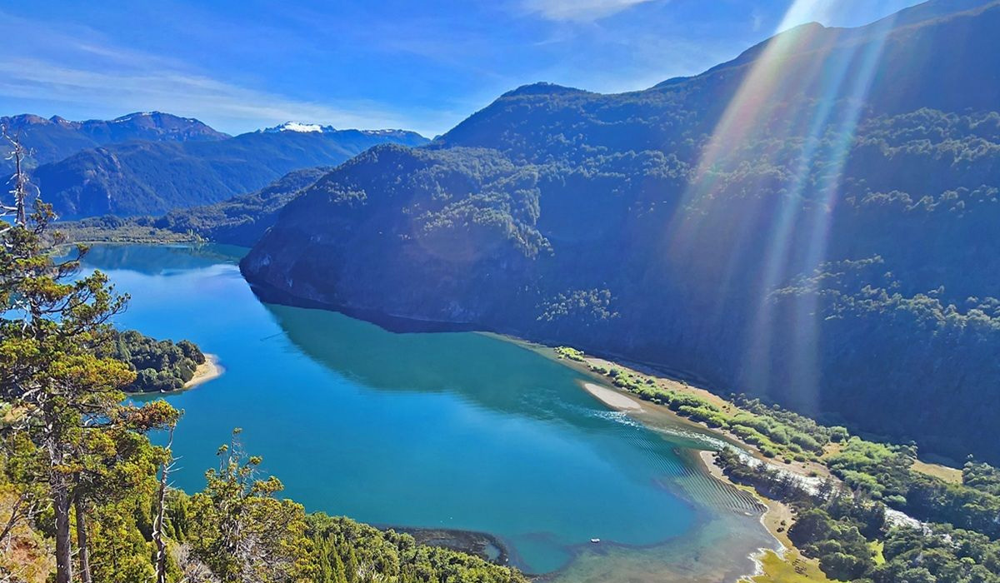
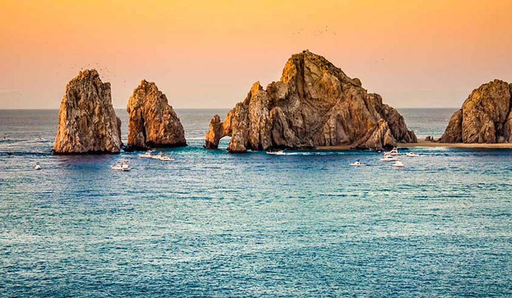
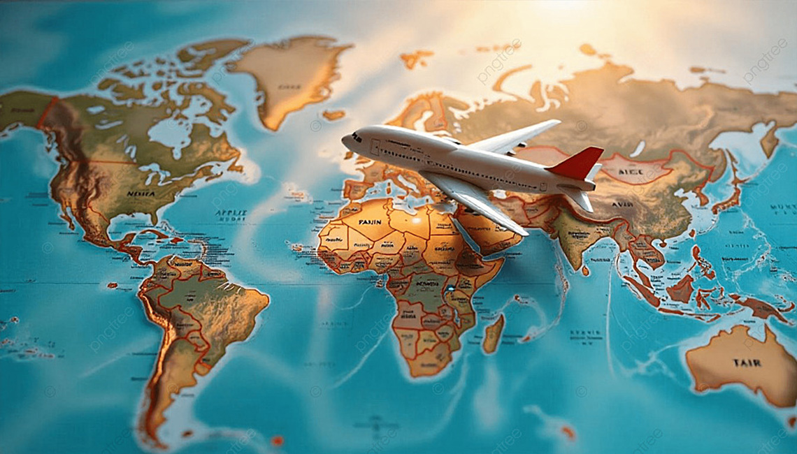

Chichén Itzá

Coliseo de Roma

Cristo Redentor

Gran Muralla China

Machu Picchu
 .
.
Petra

Taj Mahal

Viajar permite conocer culturas, paisajes y experiencias únicas que dejan recuerdos inolvidables y enseñanzas para toda la vida.
Cada país tiene lugares increíbles llenos de historia, naturaleza y belleza que inspiran a seguir soñando con nuevas aventuras.
Conocer diferentes ciudades y tradiciones hace que cada viaje se convierta en una oportunidad para aprender, disfrutar y descubrir.





.
